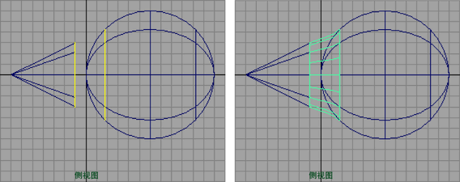

可以在曲面曲线集所定义的两个边界之间构建融合。例如，可以使用该工具创建在生物的手臂和躯干之间形成平滑连接的曲面。
- 选择。
- 单击形成第一条边界的曲面曲线，然后按 Enter 键。可以使用等参线、边或曲面上的曲线。
- 单击形成第二条边界的曲面曲线，然后按 Enter 键。

如果编辑为融合提供输入曲线的曲面，那么该融合会自动更新。
注： 如果使用操纵器控制柄调整直线（例如两个平面的边）之间的圆角融合，可能产生扭曲和异常结果。
圆角融合曲面疑难解答
如果产生的圆角融合曲面是扭曲的，请尝试以下操作：
- 在融合的一端反转曲面曲线的方向。
- 如果不希望反转曲线，请使用“反转方向左侧/右侧”(Reverse Direction Left/Right)属性在创建曲面后反转该曲面。